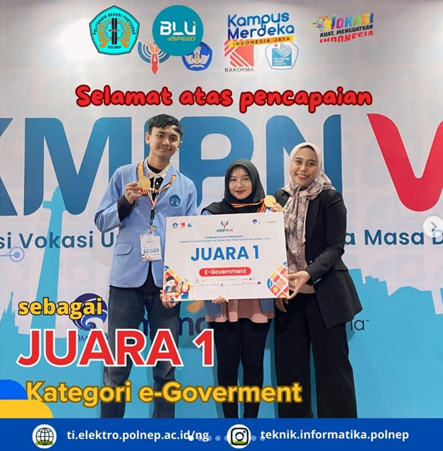
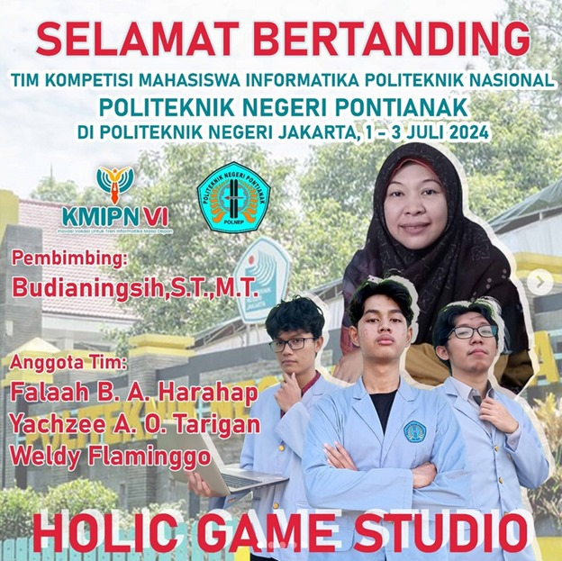
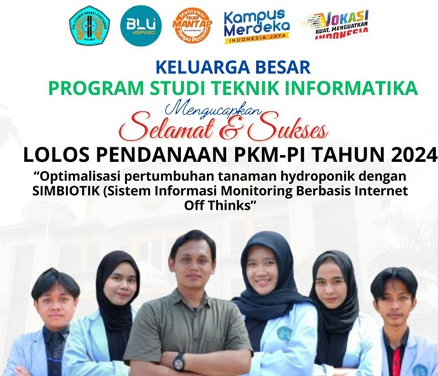

Diterimanya ananda menjadi calon mahasiswa baru Teknik Informatika Jurusan Teknik Elektro Politeknik Negeri Pontianak Tahun 2024 melalui jalur SM-KPN!
Masih ingat kah Tahun 2022 Kontingen Polnep Berhasil Menduduki Peringkat 2 umum pada Porseni Politeknik ke XIII di Politekniik Negeri Banjarmasin.
Pada Tahun 2024 ini Program Studi kembali menempati urutan Pertama sebagai program studi dengan peminat tertinggi kelompok Rekayasa